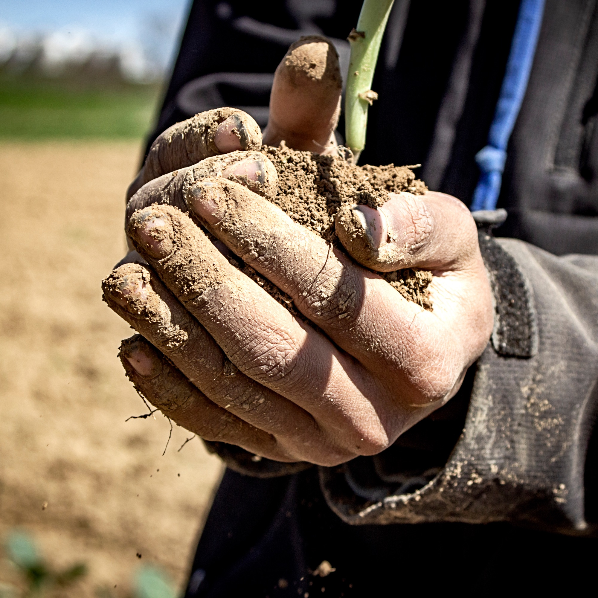

Field Notes
No. 01 · 2026 season
46% more organic matter on the compost plot. 14% on plain water. The tea plot gained one, and had the fewest pests.
Sandra Niggemeyer
Van, Texas
Source: her field trial report, 2026. Photograph from the Foundation library.